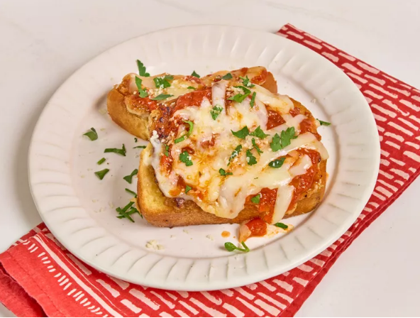

Smashed Chicken Parmesan Texas Toast

Description
This smashed chicken Parmesan Texas toast is ground chicken, done smashburger style. Topped with mozzarella and marinara sauce, it's delightfully Italian.
Ingredients
- 1 pound ground chicken
- 1 teaspoon kosher salt
- 1/2 teaspoon freshly ground black pepper
- 1 teaspoon garlic powder
- 1/4 teaspoon Italian seasoning
- 1/4 teaspoon crushed red pepper
- 1/4 cup freshly grated Parmesan cheese
- 1 package frozen garlic flavored Texas toast
- 4 teaspoons olive oil
- 1/2 cup marinara sauce
- 1 cup shredded mozzarella cheese
Steps
- Combine ground chicken, salt, pepper, garlic powder, Italian seasoning, and grated Parmesan in a bowl. Spread mixture in a thin layer over one side of each
toast, being sure to reach the edges of the bread.
- Heat a large nonstick skillet over medium-high heat. Add 2 teaspoons oil and place half of the toasts, chicken side down, in the hot skillet, lightly pressing
down on each one with a spatula.
- Cook, undisturbed, until golden brown and cooked through, about 4 minutes. Flip, turn heat to low, and top each toast with 1 tablespoon marinara sauce and 2
tablespoons mozzarella cheese. Cover the skillet and turn off the heat, and let stand until the cheese is completely melted, about 2 minutes. Repeat with remaining toasts.
Home